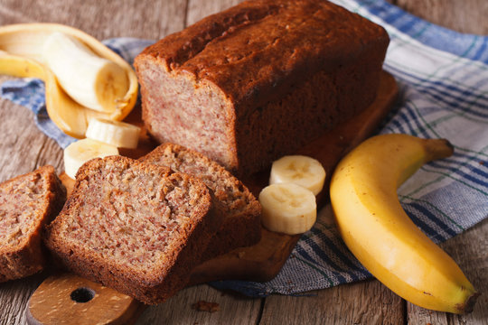

Banana bread is a soft, moist, and flavorful loaf made with ripe bananas. It is easy to prepare and makes a perfect breakfast, snack, or dessert. This classic recipe combines simple ingredients to create a delicious homemade treat that everyone will enjoy.
Follow this steps to make a delicious banana bread: